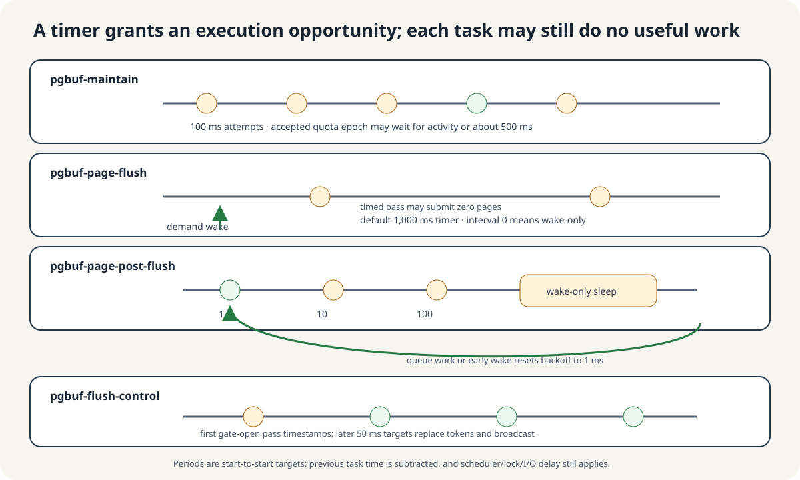
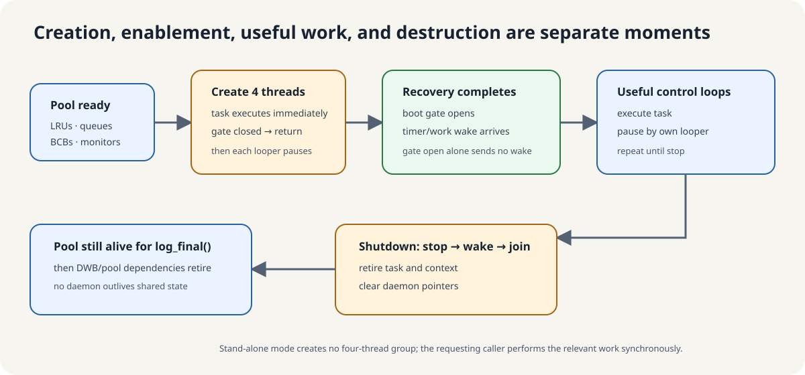

What if a new page needs a frame, but every frame is occupied?
A request thread needs page E. E is absent from memory, and every page-buffer frame is occupied. A frame is a memory slot for one page. An existing page must leave before E can occupy its slot.
This small constructed example retains only the states needed for reasoning. It does not reproduce the size or LRU order of a real CUBRID pool.
| Resident page | Current state | Can E overwrite it immediately? |
|---|---|---|
| A | Another thread is using it: fixed | No. That would take memory away from its current user. |
| B | No longer in use, but modified: dirty | No. Its changes need a safe write path first. |
| C | No longer in use, but modified: dirty | It needs the same preparation as B. |
| D | Another thread is using it: fixed | It cannot be reused while that ownership remains. |
Question: B has not been used recently. Can we overwrite it with E now? Being old explains why we prefer B. It does not establish that reuse is safe. Its changes must be handled first.
Four problems emerge: prepare reusable candidates, finish state changes after submission, adapt retention policy to changing work, and pace writes. The four daemons divide these different responsibilities.
Could the request thread do everything itself?
It could. But if reading E also requires writing B first, E pays for another page’s preparation before its own read can proceed. A separate thread can prepare candidates ahead of demand. The performance benefit depends on workload and I/O conditions.
- Prepare on demand: request E → find no free slot → handle B’s write → recheck reuse safety → read E.
- If a candidate was prepared earlier: another thread handles B’s write → E arrives later → recheck safety → reuse the frame.
A background thread that repeatedly performs and waits for such work is a daemon here. It runs inside the DB server, not as a separate server process. Foreground means the request thread; background describes execution separate from that request.
Question: could one daemon do all the work in sequence? That is a possible design. CUBRID separates four responsibilities with different work triggers and waiting conditions. They are not four stages that every page traverses. In particular, maintenance and flush-control do not pass pages to the next worker.
1. Page-flush — who prepares replacement candidates ahead of demand?
Question: if dirty B repeatedly makes requests wait, what work can happen earlier? Find cold dirty pages and submit copies of their changes to the write path. This is the job of pgbuf-page-flush.
- Find cold dirty pages in the replacement-candidate zone.
- Recheck page identity, ownership, an existing flush, and other eligibility conditions.
- For an eligible page, take a safe copy and submit it with the required WAL ordering. WAL requires the recovery log to be written before the corresponding data.
- If no newer change appears and the remaining reuse conditions hold, its frame can become a candidate for a later request.
Question: does flushing B remove it from memory? No. Flush handles recording changes; eviction removes a resident page so its frame can be reused. While B remains resident, a later B request can still use it.
If the write path uses DWB (the double-write buffer), successful submission need not mean that the original data-file location has already been written. If B is modified or fixed again while the copy is being submitted, it cannot immediately be reused.
pgbuf_page_flush_daemon_task::execute
→ pgbuf_flush_victim_candidates
→ pgbuf_bcb_flush_with_walThis is the branch without neighbor flushing. A candidate whose WAL is not ready can be skipped while log flushing is requested.
2. Post-flush — does a waiting request learn about completion automatically?
Question: B’s copy has been submitted. How does another thread learn that its flush processing is finished? Someone must update memory-side state and wake relevant waiters. The per-page management object holding such state is the BCB (Buffer Control Block). Page contents and BCB management state are different things.
The flushing thread can normally finish this work itself. Under frame-allocation pressure, a busy page-flush thread can delegate the remaining work and move on to another candidate. This is the role of pgbuf-page-post-flush.
- When the delegation conditions hold, page-flush puts the BCB pointer into the
flushed_bcbsqueue. It does not send the page copy. - Post-flush removes the BCB, locks it, and checks its current state. A new dirty change or fix prevents direct frame assignment.
- If safety conditions and policy permit, it can assign the frame directly to a waiting request. Whether or not assignment succeeds, it finishes flush-state bookkeeping and wakes flush waiters.
Question: does post-flush write B a second time? No. It handles the delegated management state. Nor does it assign every submitted page unconditionally: current state can have changed since submission.
pgbuf_bcb_flush_with_wal
→ flushed_bcbs queue: PGBUF_BCB pointer
⇢ pgbuf_page_post_flush_execute
→ pgbuf_assign_flushed_pagesThe dashed direction (⇢) means another thread consumes the queue later. This is not one synchronous call stack. Delegation conditions and inline completion →
3. Maintenance — should yesterday’s busy work keep the same preference today?
Question: X was busy in the morning, but now X is quiet and Y is busy. Should retention policy stay unchanged? Targets based on earlier activity may no longer fit the pages currently in use.
CUBRID organizes pages in private/shared LRU lists. A quota is a retention target for a private list, not an exclusively reserved slice of memory. A zone separates more protected pages from replacement candidates within a list. A page does not belong to multiple zones simultaneously.
- Ordinary page-use paths collect activity samples.
pgbuf-maintainperiodically attempts adjustment. When internal time and activity conditions admit the pass, it uses the samples to update quotas and zone boundaries.- Subsequent replacement and list management use the updated policy. Maintenance neither writes page contents nor creates extra memory.
For example, fewer activity samples for X and more for Y give the policy a chance to adapt. This does not mean “take exactly two frames from X and immediately give them to Y.”
pgbuf_page_maintenance_execute
→ pgbuf_adjust_quotasInspect activity sampling and quota calculation →
Source limitation of the direct-assignment backup
The task also calls pgbuf_direct_victims_maintenance(), but at the pinned revision its two loops fail their initial conditions and do not enter their bodies. Maintenance is therefore not taught as a guaranteed rescue for waiting requests. See VS-20 for evidence and unverified impact.
4. Flush-control — should background writers always run as fast as possible?
Question: is it always good for writers to keep writing until dirty pages are gone? Storage is shared with other reads and writes. Bursts of background work can compete with them for I/O. Alongside “what should we write?”, there is a separate question: “how quickly should writers keep progressing?”
pgbuf-flush-control periodically refreshes a shared balance of page-sized credits. Credits are accounting units for this pacing mechanism. Participating writers consume credits for written pages after successful OS writes; if credits are insufficient, they may wait before continuing. This is soft pacing.
- Suppose the shared balance is 2 credits. This is a constructed example, not an actual configuration value.
- A participating writer completes a one-page OS write and spends 1 credit, leaving 1.
- Another one-page write followed by consumption leaves 0.
- The next page’s write also succeeds before credits are requested. The writer may now wait because the balance is insufficient.
- Flush-control refreshes the balance and wakes waiters, allowing the writer to retry consumption.
Question: does a zero balance prevent an OS write from starting? No. The check comes after the write. It is neither strict pre-write permission nor a hard limit on all storage I/O. Some paths bypass waiting, so not every write waits in the same way.
pgbuf_flush_control_daemon_task::execute
→ fileio_flush_control_add_tokens
fileio_write: successful OS write
→ fileio_compensate_flush
→ fileio_flush_control_get_tokenThe upper path supplies credits; the lower path consumes them. This does not depict flush-control writing a page. Refresh timing, calculation, and bypass rules →
Four questions distinguish the responsibilities
Prepare candidates
B: dirty → safe copy submitted
Finish completion
BCB pointer → recheck state and wake waiters
Adapt policy
Activity samples → quotas and zones
Pace progress
Written page count ↔ credit balance
| Daemon | Question answered | Page writes |
|---|---|---|
| Page-flush | Who prepares dirty replacement candidates ahead of demand? | Yes |
| Post-flush | Who finishes state processing and wakeups after submission? | No new write |
| Maintenance | Who adapts retention targets to currently active work? | No |
| Flush-control | How quickly should writers keep progressing? | No |
Timers and wakeups provide an opportunity to check for work. Useful work still depends on the boot gate, queues, replacement pressure and other current conditions.
Timing and wakeup details

| Daemon | Plain job | Nominal pause | Explicit work wake | Page-image I/O? |
|---|---|---|---|---|
pgbuf-maintain | Recalculate replacement quotas/zones | 100 ms attempts | None | No |
pgbuf-page-flush | Create clean replacement supply from cold dirty pages | 1,000 ms default; zero is wake-only | Victim/allocation pressure | Yes |
pgbuf-page-post-flush | After submission, finish BCB bookkeeping and possibly supply a waiting allocator | 1 → 10 → 100 ms, then wake-only | flushed_bcbs enqueue | No new write |
pgbuf-flush-control | Replace the shared page-credit balance that may pause writers after successful OS writes | 50 ms target | None | No |
wakeup() only while it is sleeping. If the task is already running, the call is not stored for its next pause. Each task therefore rechecks shared pressure or queue state when it executes.Post-flush and flush-control do not write the page again
Each daemon works and waits independently
The four daemons are background threads with distinct roles. A timer or wakeup provides an execution opportunity; current state determines whether useful work follows.
Expand implementation details and sources
create_daemon() creates one managed execution context and one std::thread. Its loop is simple: execute the task, ask its cubthread::looper how long to pause, then execute again. The four names are therefore four independent control loops, rather than interchangeable workers pulling dirty pages from one queue.
The task runs once immediately after construction. A fixed period is a start-to-start target: the looper subtracts the previous execution time. A 100 ms period does not mean “finish work, then always sleep another 100 ms,” and it does not guarantee useful work on every pass.
Work starts after recovery and stops before pool teardown
The server creates the threads during recovery, but useful page-buffer work waits for the boot gate. Normal shutdown stops them before pool teardown. Stand-alone mode does not create these four threads.
Expand implementation details and sources

- The page-buffer pool, LRUs, queues, and monitors are initialized first.
- Server boot creates the four daemon threads before log recovery finishes.
- Their immediate task calls see the boot gate closed and return without useful page-buffer work.
- Boot opens the gate after recovery. Opening it does not itself wake every sleeper; a later timer or ordinary work wake lets each role observe the open gate.
- Normal shutdown sets each looper's stop flag, wakes a sleeper, joins the OS thread, retires its task/context, and clears the pointer.
log_final()and pool teardown happen after the page-buffer daemons have stopped, so no daemon outlives the shared state it touches.
Stand-alone mode creates none of these four threads. When background page-flush is unavailable, the relevant requester can perform victim flushing synchronously.
Cleaning and bookkeeping / policy and pacing
Checkpoint, the log-flush daemon, foreground/WRITE-owner flushes, and DWB helper daemons are outside this four-role group. They can support or reuse the same durability machinery without becoming page-buffer daemon workers.
Who is needed in each situation?
1. Another thread modifies B while its copy is submitted. May post-flush immediately give that frame to E?
Predict, then reveal the explanation
No. The submitted copy and current memory contents now differ. Completing the earlier flush must preserve the newer DIRTY state, and current reuse conditions must be checked.
2. If the caller finishes completion inline when post-flush is absent, must completion always have its own thread?
Predict, then reveal the explanation
No. Required completion work is distinct from the decision to delegate it to another thread. However, once work has been delegated to a queue, someone must consume that queue.
3. X becomes quiet and Y becomes busy. Will waking page-flush more often adapt their retention targets?
Predict, then reveal the explanation
Page-flush records candidate changes. Maintenance is responsible for reflecting activity samples in quotas and zones. Write volume and retention policy are different problems.
4. The credit balance is zero, but a writer just wrote one page. Has it violated the flush-control rule?
Predict, then reveal the explanation
No. Participating paths consume credits after successful OS writes. They may delay subsequent progress; they do not undo the write that already happened.
References
Sources and further reading
CUBRID f799e05d77d5300c6ea5753b4a6cc7caee6d8912: page_buffer.c:4010–4165, 10925–10952, 14260–14624, 15489–15556, 16997–17144; file_io.c:752–827, 4123–4370.